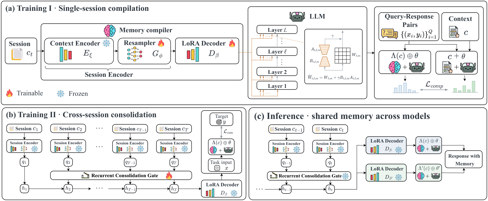

Agent Memory 与经验学习
从 Agent 与 Harness 出发，理解三类记忆，分析检索、维护与策略学习。
按日期保存，每次讨论都有独立记录。
从 Agent 与 Harness 出发，理解三类记忆，分析检索、维护与策略学习。
从当前使用的信息，到跨任务保留的记录，再到可复用的行动经验。
助手查好车票后，发现出发时间与会议冲突。由此形成经验：先确认日期、地点和不可出发的时段，再筛选车次。
下次安排另一次出行时，复用这一检查顺序。
会话历史先编译为潜在记忆，再递推整合，最后映射为特定主模型的 LoRA 参数。

关注记忆如何参与模型计算，以及跨会话信息如何被保留。
风格演示节选；不新增论文结论，正式报告保留原有来源与证据范围。